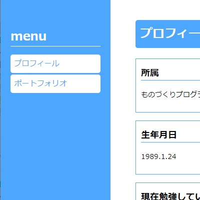
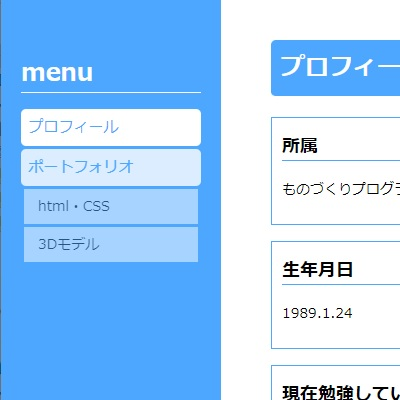

ポートフォリオ
html CSS
htmlとcssポートフォリオサイトの作成。


2カラムに分けメニュー画面を作成。
ポートフォリオ部分は作品ごと見られるようにメニューを作り、「ポートフォリオ」をクリックすることによって隠すこともできる。
選択部分をhoverによりわかりやすく表示するようにしました。
訓練の内容だけではわからなかった部分はインターネット検索をして必要なものを探しました。
ソースコードはgithubで公開しています→ Git hub